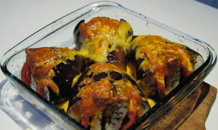

| Zutaten für 4 Personen: | |
| 2 | Auberginen |
| 2-3 | Tomaten |
| 100g | Mozzarella oder anderen gratinierbaren Käse |
| Basilikum | |
| Thymian | |
| Salz | |
| Pfeffer | |
| Olivenöl | |
Aubergine halbieren und in Fächer schneiden.
Tomaten in fünf Millimeter breite Scheiben schneiden.
Mozzarella in Scheiben schneiden.
Gratinform ausbuttern
Tomaten in die Auberginefächer schieben.
Pfeffern, salzen, Basilikum und Thymian darüber streuen und mit Olivenöl bestreichen.
Mit Mozzarellascheiben bedecken, das ganze in eine Aluminium-Gratinschale legen und mit einer Aluminium-Folie zudecken. 10-15 Minuten auf den Grill garen beziehungsweise 45 Minuten im Ofen bei 200°C.
Züri Woche, Sommer 1996, Grill Tipps
Ganz ausgezeichnet am 12.2.2004. Ich verwendete Cheddar Käse was ganz gut verschmilzt. Backzeit bei 220°C im Normal-Backofen war etwa 30 Minuten.
Sandra fand das Gericht am 25 Okt 2021 nicht vier Stene würdig. Obwohl die Aubergine diesmal gar war (45 Minuten Backzeit) fand sie den Mozarella nicht die optimale Käsewahl. Vielleicht mal mit Reibkäse probieren.
@LINKBACK_TAG@ @WAKELOCK@